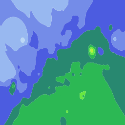
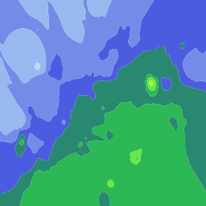

XTSKPWV · 2026-08-28 06:50
198×192 格网 · 18 多边形 · 已填色 18 · 2.087s
XTSKPWV · 2026-08-28 07:20
198×192 格网 · 23 多边形 · 已填色 23 · 4.725s
XTSKPWV · 2026-08-28 07:40
198×192 格网 · 23 多边形 · 已填色 23 · 5.036s
XTSKPWV · 2026-08-28 07:50
198×192 格网 · 25 多边形 · 已填色 25 · 5.333s
XTSKPWV · 2026-08-28 11:00
198×192 格网 · 27 多边形 · 已填色 27 · 4.522s
XTSKPWV · 2026-08-28 11:10

198×192 格网 · 31 多边形 · 已填色 31 · 5.788s
XTSKPWV · 2026-08-28 11:20
198×192 格网 · 27 多边形 · 已填色 27 · 4.989s
XTSKPWV · 2026-08-28 11:30
198×192 格网 · 26 多边形 · 已填色 26 · 4.972s
XTSKPWV · 2026-08-28 11:40

198×192 格网 · 33 多边形 · 已填色 33 · 4.261s
XTSKPWV · 2026-08-28 11:50
198×192 格网 · 32 多边形 · 已填色 32 · 5.096s
XTSKPWV · 2026-08-28 12:00
198×192 格网 · 28 多边形 · 已填色 28 · 5.218s